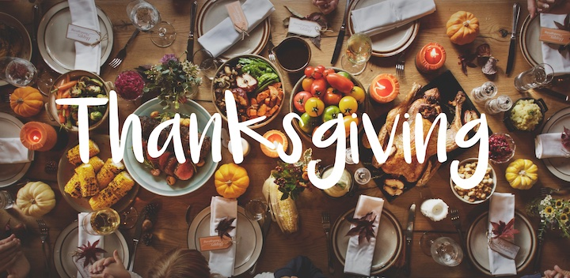

Durring February break, you can go skiing! After all, many call it "ski week". It is also when my birthday usually falls!!!!! "My birthday takes place in November. November 23rd: the day I, a future figure skating olympian was born. Remember this date folks--it will go down in history when I become the first women to land a quadruple axel in competition Take that Kamila Valieva." -Abby Fullerton
